Stand
Im Bauantragsstadium
Eine baldige Realisierung steht in Aussicht.
Rudolf-Steiner-Schule Dortmund
Erneuerung und Erweiterung eines eingeschossigen Kunstpavillons aus den 1970er Jahren. Ein Sanierungskonzept, das flexibel nutzbare Lernräume ergänzt — und das so gebaut ist, dass sich der Grundriss später ohne Materialverlust umbauen lässt.

Ausgelobt von der Rudolf-Steiner-Schule Dortmund.
Eine baldige Realisierung steht in Aussicht.
Das Bestandsgebäude aus den 1970er Jahren entspricht weder den räumlichen noch den energetischen Anforderungen. Ziel war ein umfassendes Sanierungskonzept und die Ergänzung flexibel nutzbarer Lernräume.
Die Schule saniert derzeit ihren Unterstufentrakt. Statt für diese Zeit Container aufzustellen, nutzt der Entwurf die Bauzeit als erste Nutzungsphase — und ist von Anfang an so konzipiert, dass der Umbau in die zweite Phase nur eine versetzte Trennwand kostet.
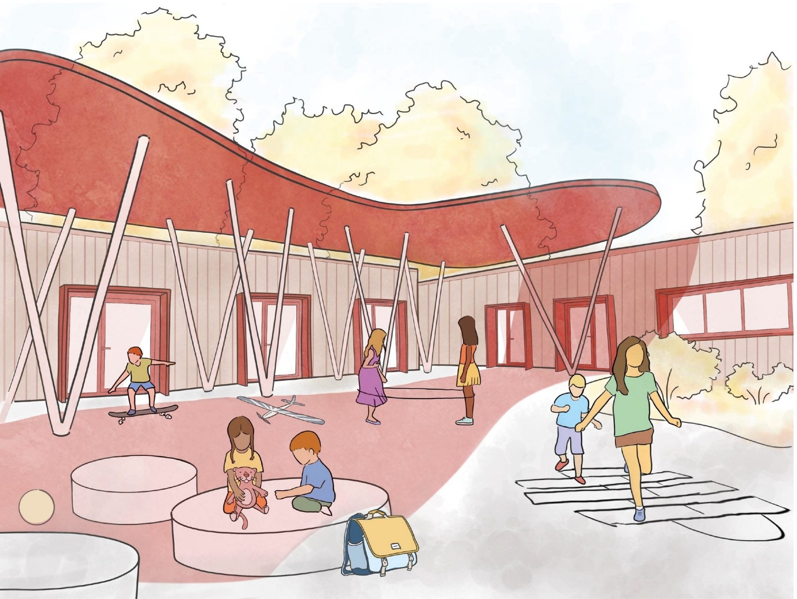
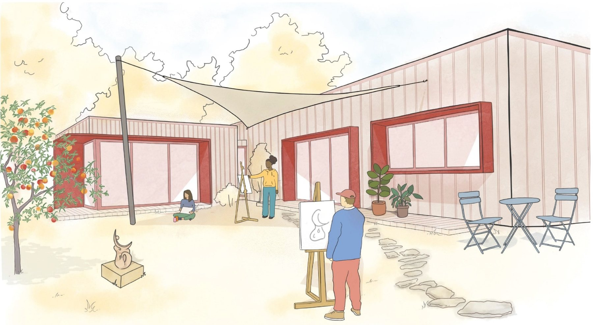
Der Grundriss ist auf ein Raster gelegt. Wird die Trennwand um ein Raster versetzt, wird aus zwei Klassenräumen ein Werkraum mit angeschlossenem Lager.
Während der Sanierung des Unterstufentrakts dienen die neuen Räume rund um den Kunstpavillon als Klassenzimmer für bis zu vier Grundschulklassen.
Feste Räume für textiles Gestalten und Plastizieren, Kunst flexibel in beiden. Drei Nutzungen in zwei Räumen — möglich durch großzügige Lagerflächen für alle Materialien.
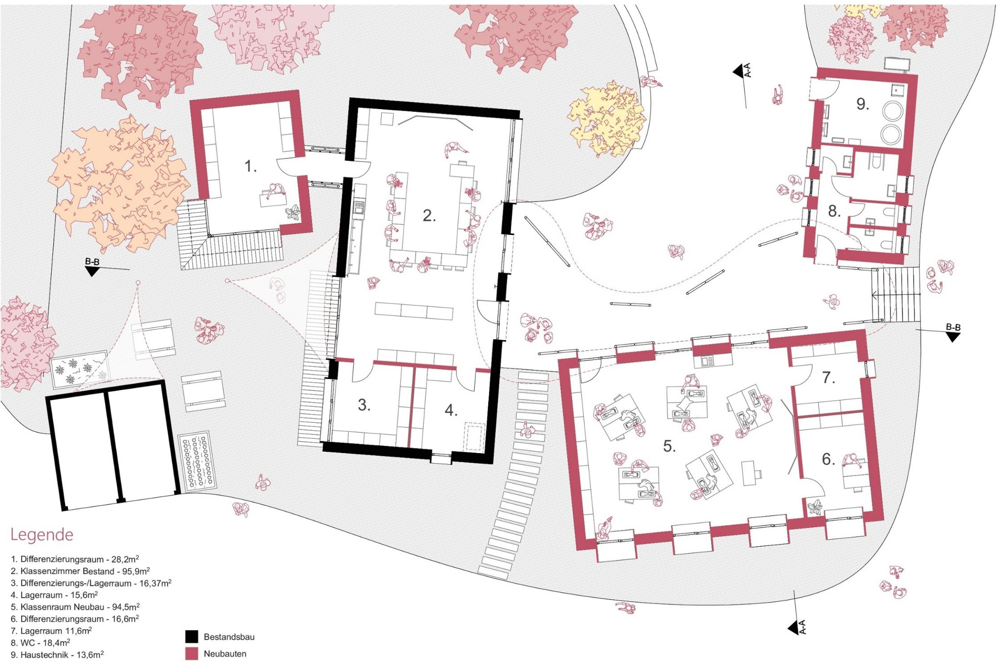
Grundriss. Schwarz: Bestandsbau. Bordeaux: Neubauten. Auf schmalen Bildschirmen seitlich scrollbar.
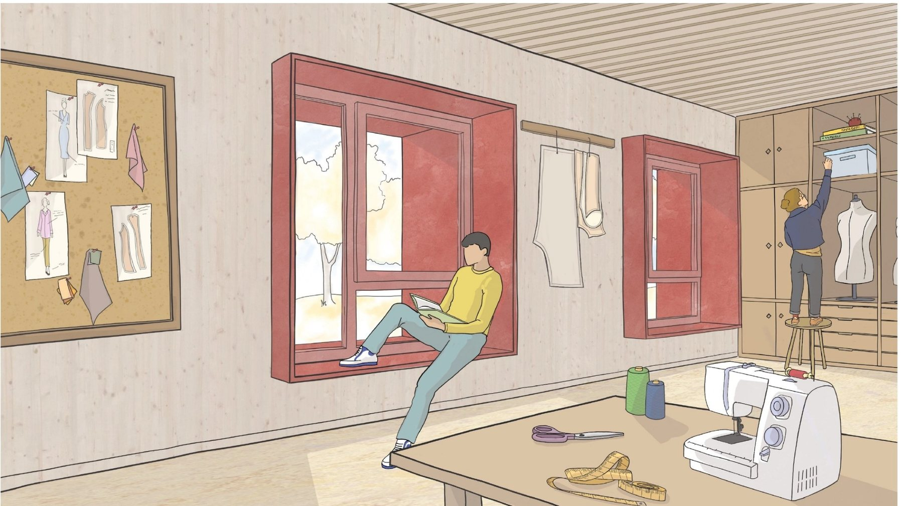
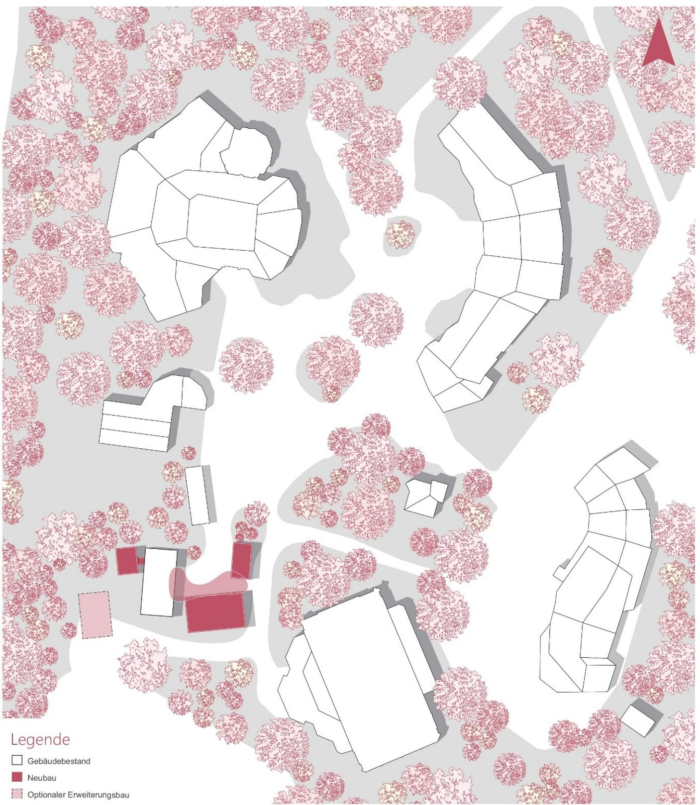
Das Ensemble besteht aus einfachen Baukörpern, die versetzt zueinander stehen. Dadurch entstehen Zwischenräume mit eigener Qualität, die für den Unterricht im Freien und die Pausengestaltung genutzt werden.
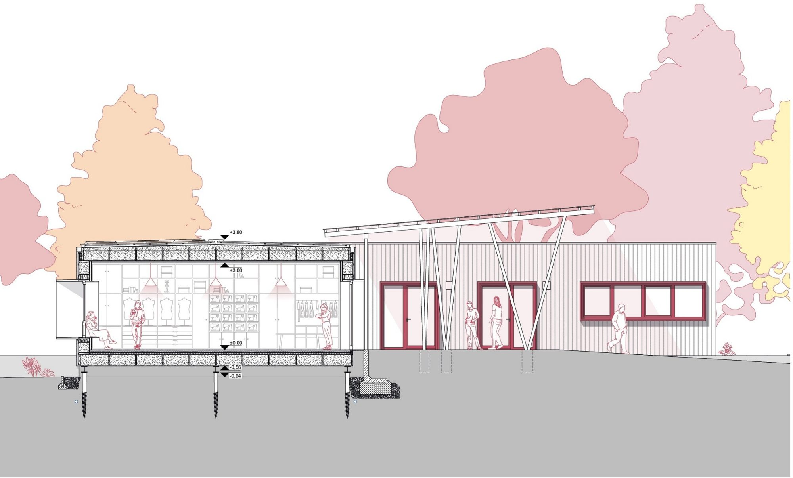
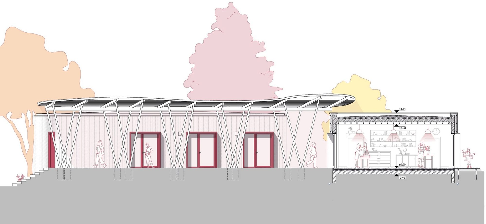
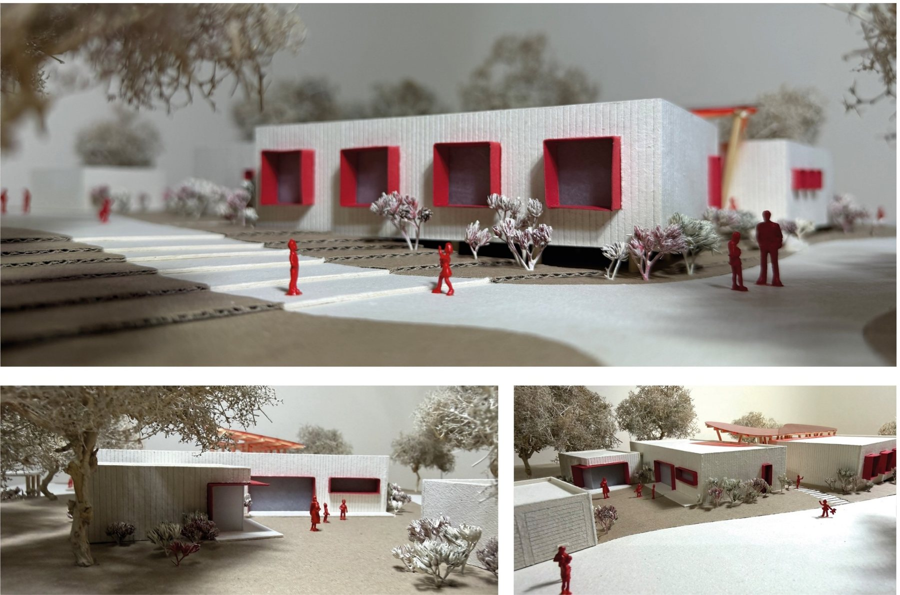
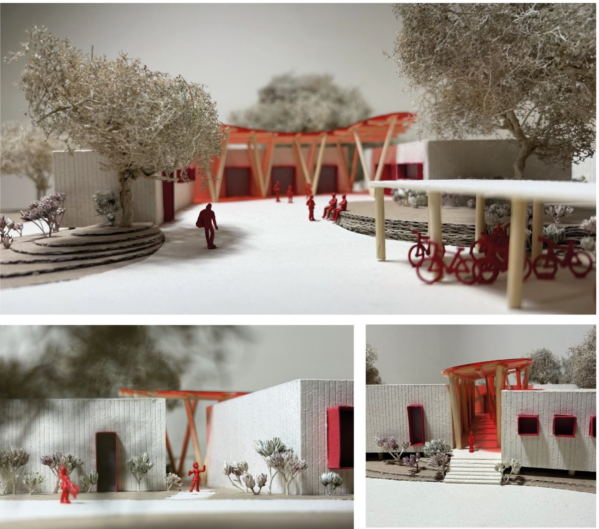
Der Neubau ist so konzipiert, dass beim späteren Umbau alle Materialien wiederverwendet werden können. Das spart Kosten und Ressourcen — und macht die zweite Nutzungsphase überhaupt erst realistisch.
Schraubfundamente in Kombination mit Stahlträgern — rückbaubar, ohne Beton im Boden.
TGI-Holzträger in einer Kassettenstruktur.
Holzrahmenbau, ebenfalls aus TGI-Trägern. Gefache mit Stroh gedämmt.
Wie der Boden: TGI-Holzträger in Kassettenstruktur.
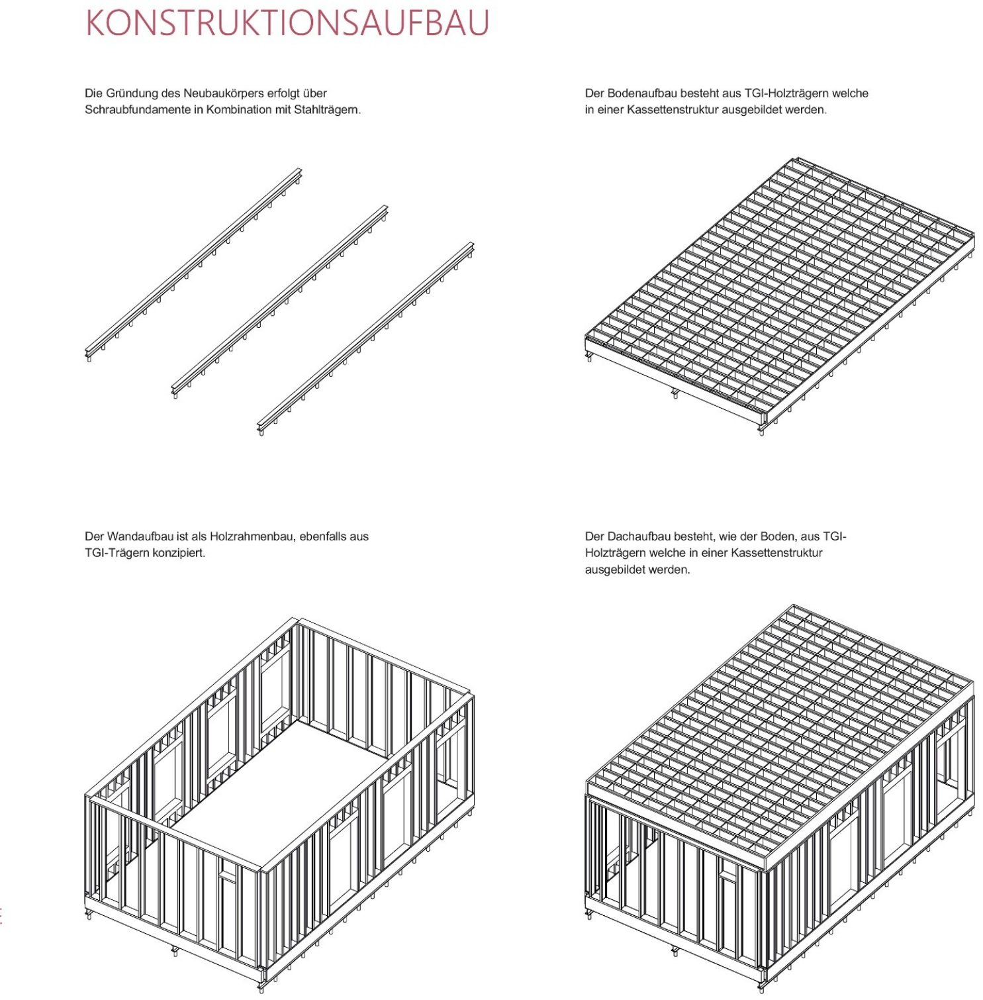
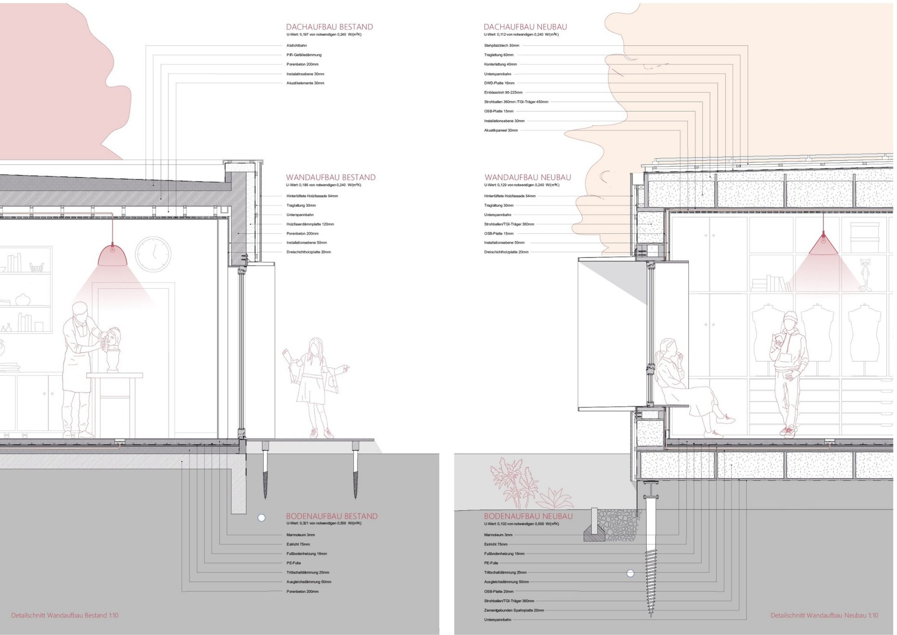
Kern des Moduls war der technische Ausbau. Verschattung, Heizung, Lüftung und Energieerzeugung sind hier nicht nachträglich ergänzt, sondern folgen derselben Zweiphasen-Logik wie der Grundriss.
Im Winter strahlt die tief stehende Sonne trotz der großen Fensterleibungen weit in die Klassenräume. Im Sommer verschatten dieselben auskragenden Leibungen — ohne bewegliche Technik.
Die Heizkreise der Fußbodenheizung sind so gelegt, dass sich die Räume unabhängig voneinander beheizen lassen — Voraussetzung für den Wechsel der Nutzungsphasen.
Dezentrale Lüftungsgeräte mit Wärmespeicher (110 m³/h) begrenzen die Lüftungsverluste. In der ersten Phase mit höherem Bedarf werden sie durch natürliche Fensterlüftung ergänzt.
Energiekonzept. Photovoltaik auf den Dächern erzeugt den Strom für eine Luft-Wasser-Wärmepumpe. Diese versorgt die Fußbodenheizung und bereitet das Warmwasser für die Sanitärräume auf. So erreichen die Gebäude einen hohen Grad an Autarkie.
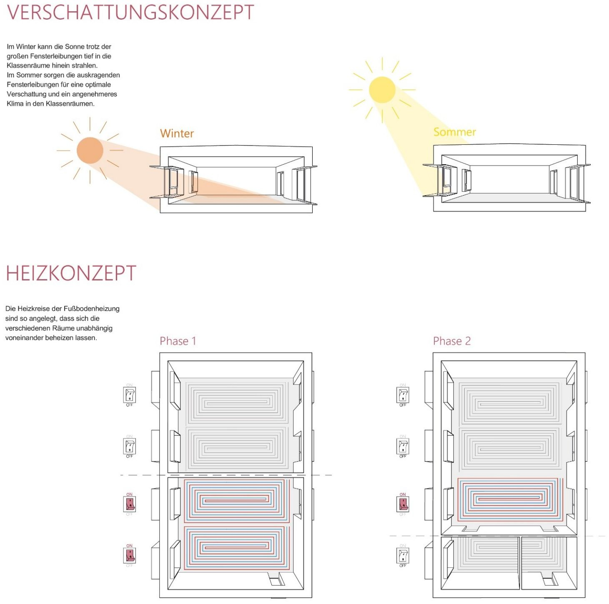
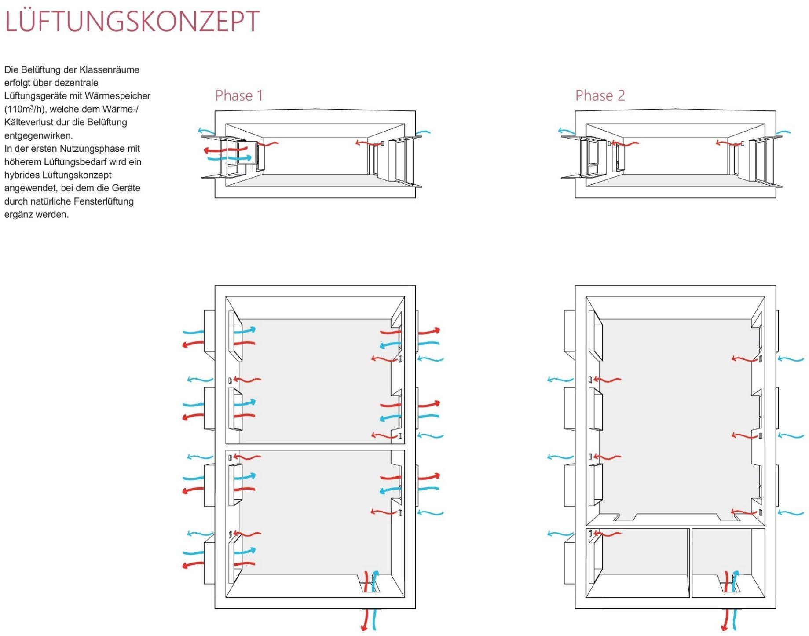
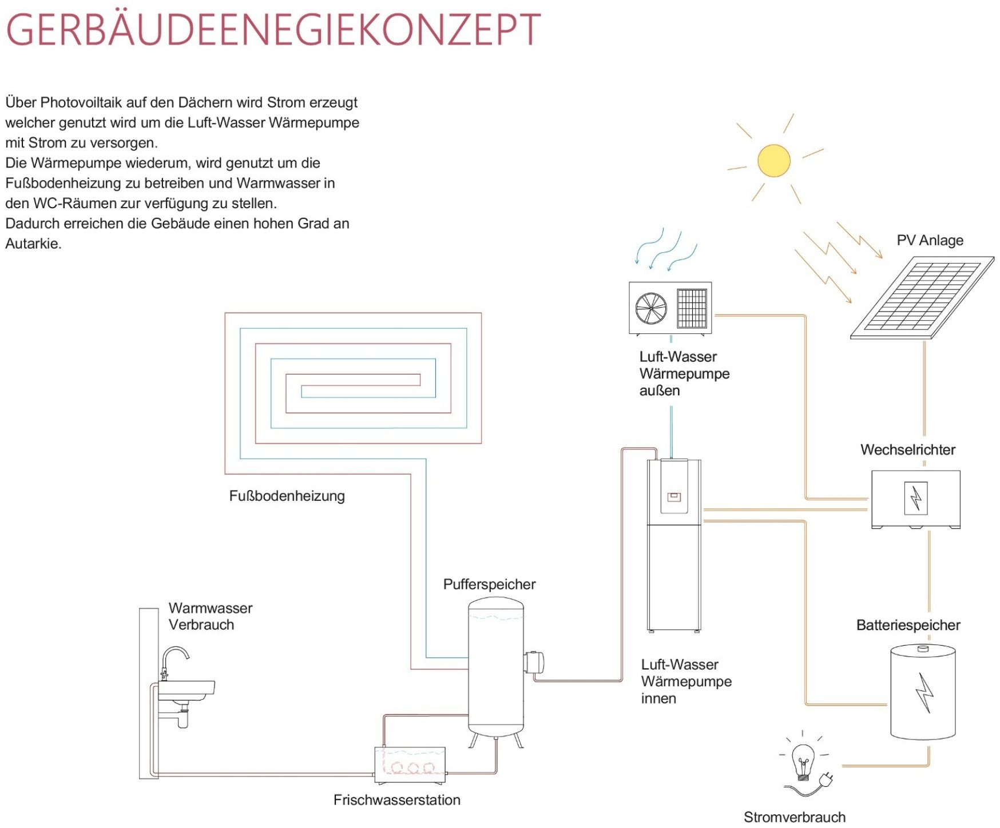
Durch die multifunktionale Nutzung der Räume steigen Auslastung und Effizienz. Das senkt Bau- und Betriebskosten und reduziert Energie- und Ressourcenverbrauch. Zusammen mit der Holz-Stroh-Bauweise und der konsequenten Rückbaubarkeit ergibt das ein Konzept, das über den einzelnen Bauabschnitt hinaus trägt.
Abbildungen und Inhalte aus dem Semesterprojekt „Kunsthof — Rudolf-Steiner-Schule Dortmund“ von Luis Bongardt, Sarah Neidhold-Lizarraga und Nicolai Schwarz, Modul BA 3.5.1 — Technischer Ausbau & energieeffizientes Bauen, Alanus Hochschule für Kunst und Gesellschaft, HS 2025/26. Betreuung: Prof. Swen Geiss und M.A. Anna Marschenko.